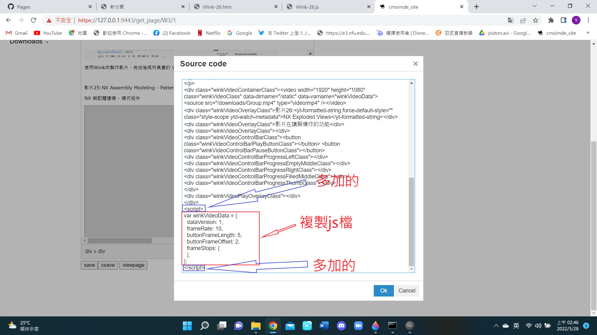

tokens <<
Previous Next >> Leo
Wink影片上傳
影片做完時，會有四個檔案
把隨身碟裡的JavaScript指令檔拉到gogle。
複製起來，開頭增加<script>，結尾增加</script>
如下
<script>
var winkVideoData = {
dataVersion: 1,
frameRate: 10,
buttonFrameLength: 5,
buttonFrameOffset: 2,
frameStops: {
},
};
</script>

接著把隨身碟裡的HTML檔拉到gogle，到自己影片點右鍵再按檢視網頁原始碼。

把下圖框起來的部分複製起來。
接著按save，按generate_pages。
到小黑框打
acp "xxx" (xxx隨便輸入甚麼都可)
推完之後回去github，找downloads資料夾。
進入downloads資料夾後，點選Add File，按Upload files。

按choose your files
選做好的wink影片(mp4檔)
檔案跑完之後，按Commit changes。
到小黑框打
git pull
完成後就可以去倉儲檢查影片有無推成功。
tokens <<
Previous Next >> Leo